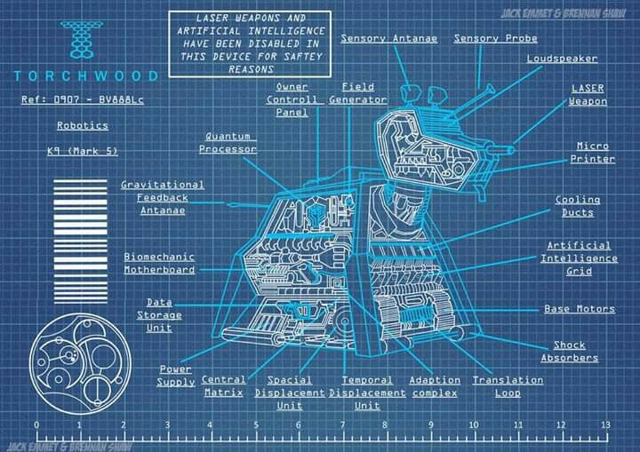

Upgrades
About
Training
Loyalty
Welcome to K-9 Academy!
Apply Now
Can I be a Good Dog?
Our Founder says...
"AFFIRMATIVE!"
Tools to be an effective companion...
History of The Doctor

Blueprints/Schematics
Good dog Tips/Tricks